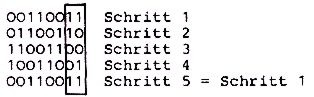

Nascom Journal |
6/80 7/80 |
Die zwei Spulen eines Schrittmotores werden,wie im Nascom-Journal 3/80 beschrieben im Viertaktbetrieb angesteuert und die Stromrichtung in jeder Spule durch eine 1 bzw. 0 am Ausgang der PIO bestimmt. Bei einer fortlaufenden Weiterschaltung des Motors in eine Richtung müssen folgende Bit-Kombinationen an den entsprechenden Ausgängen der PIO vorliegen:
Schritt 1: 11 Schritt 2: 10 Schritt 3: 00 Schritt 4: 01
Dieses Muster erhält man,wenn man das 8-bit-Wort 33h= 00110011 durch einen RRC- oder RLC-Befehl laufend nach rechts oder links rotiert und dabei nach jedem Schritt die zwei rechten Bits beobachtet. Deren Wert gibt man an die PIO weiter.
Da bei dieser Ansteuerungsart die absolute Positionierung nur über einen Bereich von vier Schritten erfolgen kann, muß man gleichzeitig mit jedem Schritt nach rechts oder links einen Positionszähler hoch- oder herunterzählen. So hat man im Mikrocomputer ständig eine Angabe über die absolute Position des Schrittmotores. Selbstverständlich kann der Mikroprozessor die einzelnen Bitmuster so schnell berechnen,daß der Schrittmotor nicht mehr mitkommt. Deshalb muß nach jedem Schritt eine Pause eingelegt werden,damit der Motor in die neue Position schwingen kann. Mit dieser Pause hat man die Möglichkeit,die Drehzahl des Schrittmotores ohne die Hilfe eines mechanischen Getriebes quasi stufenlos zu verändern und hat doch eine reproduzierbare,quarzgenaue Geschwindigkeit.
| Seite 12 von 52 |
|---|